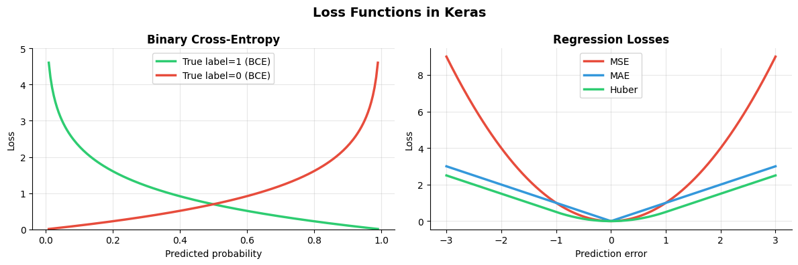
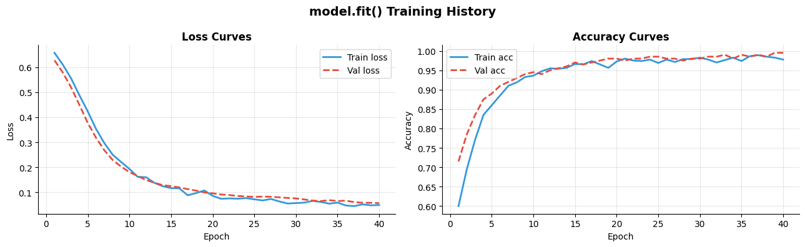
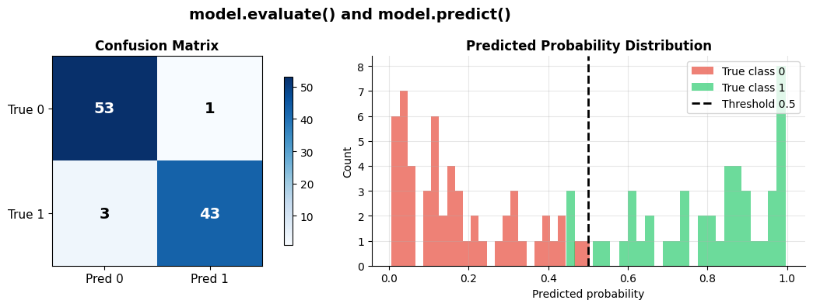
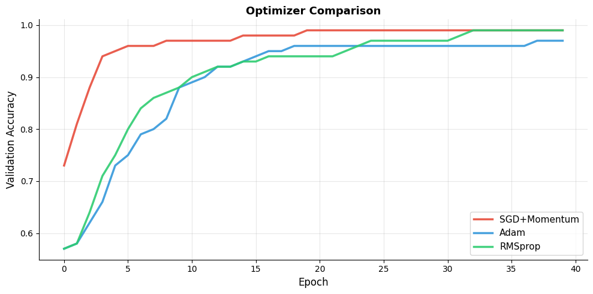

How do you train with Keras?#
Topics: model.compile() · model.fit() · model.evaluate() · model.predict() · Metrics · Loss Functions · Optimizers
1. model.compile()#
What it is#
Configures the model for training
Must be called before
model.fit()Sets optimizer, loss function, and evaluation metrics
Key arguments#
optimizer— update rule:'adam','sgd', or optimizer objectloss— what to minimize:'binary_crossentropy','sparse_categorical_crossentropy', etc.metrics— what to track:['accuracy'],['mae'], etc.
Loss function cheatsheet#
Task |
Loss |
Label format |
|---|---|---|
Binary classification |
|
0 or 1 |
Multi-class (int labels) |
|
integers |
Multi-class (one-hot) |
|
one-hot vectors |
Regression |
|
float values |
Gotchas#
Use
sparse_categorical_crossentropywhen labels are integers — avoids one-hot conversionfrom_logits=Truewhen model output has no softmax/sigmoid — more numerically stableMetrics are reset at the start of each epoch automatically
import tensorflow as tf
import numpy as np
import matplotlib.pyplot as plt
# --- model.compile() examples ---
model = tf.keras.Sequential([
tf.keras.layers.Dense(32, activation='relu', input_shape=(8,)),
tf.keras.layers.Dense(3, activation='softmax'),
])
# Standard compile
model.compile(
optimizer=tf.keras.optimizers.Adam(learning_rate=1e-3),
loss='sparse_categorical_crossentropy',
metrics=['accuracy'],
)
# With from_logits (no softmax in model)
model_logits = tf.keras.Sequential([
tf.keras.layers.Dense(32, activation='relu', input_shape=(8,)),
tf.keras.layers.Dense(3), # no activation — raw logits
])
model_logits.compile(
optimizer='adam',
loss=tf.keras.losses.SparseCategoricalCrossentropy(from_logits=True),
metrics=['accuracy'],
)
# Multi-metric compile
model.compile(
optimizer='adam',
loss='sparse_categorical_crossentropy',
metrics=['accuracy', tf.keras.metrics.TopKCategoricalAccuracy(k=2)],
)
# Visualize loss function behavior
fig, axes = plt.subplots(1, 2, figsize=(12, 4))
p = np.linspace(0.01, 0.99, 200)
axes[0].plot(p, -np.log(p), color='#2ECC71', linewidth=2.5, label='True label=1 (BCE)')
axes[0].plot(p, -np.log(1-p), color='#E74C3C', linewidth=2.5, label='True label=0 (BCE)')
axes[0].set_title('Binary Cross-Entropy', fontsize=12, fontweight='bold')
axes[0].set_xlabel('Predicted probability'); axes[0].set_ylabel('Loss')
axes[0].set_ylim(0, 5); axes[0].legend(fontsize=10)
axes[0].grid(True, alpha=0.3)
axes[0].spines['top'].set_visible(False); axes[0].spines['right'].set_visible(False)
err = np.linspace(-3, 3, 300)
axes[1].plot(err, err**2, color='#E74C3C', linewidth=2.5, label='MSE')
axes[1].plot(err, np.abs(err), color='#3498DB', linewidth=2.5, label='MAE')
huber = np.where(np.abs(err)<=1, 0.5*err**2, np.abs(err)-0.5)
axes[1].plot(err, huber, color='#2ECC71', linewidth=2.5, label='Huber')
axes[1].set_title('Regression Losses', fontsize=12, fontweight='bold')
axes[1].set_xlabel('Prediction error'); axes[1].set_ylabel('Loss')
axes[1].legend(fontsize=10)
axes[1].grid(True, alpha=0.3)
axes[1].spines['top'].set_visible(False); axes[1].spines['right'].set_visible(False)
plt.suptitle('Loss Functions in Keras', fontsize=14, fontweight='bold')
plt.tight_layout()
plt.savefig('keras_losses.png', dpi=120, bbox_inches='tight')
plt.show()
WARNING: All log messages before absl::InitializeLog() is called are written to STDERR
I0000 00:00:1776953880.484661 3635 cudart_stub.cc:31] Could not find cuda drivers on your machine, GPU will not be used.
I0000 00:00:1776953880.530936 3635 cpu_feature_guard.cc:227] This TensorFlow binary is optimized to use available CPU instructions in performance-critical operations.
To enable the following instructions: AVX2 FMA, in other operations, rebuild TensorFlow with the appropriate compiler flags.
WARNING: All log messages before absl::InitializeLog() is called are written to STDERR
I0000 00:00:1776953882.108771 3635 cudart_stub.cc:31] Could not find cuda drivers on your machine, GPU will not be used.
/opt/hostedtoolcache/Python/3.11.15/x64/lib/python3.11/site-packages/keras/src/layers/core/dense.py:107: UserWarning: Do not pass an `input_shape`/`input_dim` argument to a layer. When using Sequential models, prefer using an `Input(shape)` object as the first layer in the model instead.
super().__init__(activity_regularizer=activity_regularizer, **kwargs)
E0000 00:00:1776953883.355717 3635 cuda_platform.cc:52] failed call to cuInit: INTERNAL: CUDA error: Failed call to cuInit: UNKNOWN ERROR (303)

2. model.fit()#
What it is#
Trains the model for a fixed number of epochs
Returns a
Historyobject — contains loss and metric values per epochHandles batching, shuffling, validation split automatically
Key arguments#
x, y— training dataepochs— number of full passes through databatch_size— samples per gradient update (default 32)validation_split— fraction of training data for validationvalidation_data— explicit(X_val, y_val)tuplecallbacks— list of callback objects (EarlyStopping, etc.)class_weight— dict for imbalanced classes
Gotchas#
validation_splittakes from the END of the data — shuffle firstshuffle=Trueby default — shuffles training data each epochHistory object keys:
loss,val_loss,accuracy,val_accuracy
import tensorflow as tf
import numpy as np
import matplotlib.pyplot as plt
np.random.seed(42); tf.random.set_seed(42)
X = np.random.randn(1000, 8).astype(np.float32)
y = (X[:, 0] + X[:, 1] > 0).astype(np.int32)
X_train, X_val = X[:800], X[800:]
y_train, y_val = y[:800], y[800:]
model = tf.keras.Sequential([
tf.keras.layers.Dense(32, activation='relu', input_shape=(8,)),
tf.keras.layers.Dropout(0.2),
tf.keras.layers.Dense(16, activation='relu'),
tf.keras.layers.Dense(1, activation='sigmoid'),
])
model.compile(optimizer='adam', loss='binary_crossentropy', metrics=['accuracy'])
history = model.fit(
X_train, y_train,
epochs=40,
batch_size=32,
validation_data=(X_val, y_val),
verbose=0,
)
print(f"Final train accuracy: {history.history['accuracy'][-1]:.3f}")
print(f"Final val accuracy : {history.history['val_accuracy'][-1]:.3f}")
print(f"History keys : {list(history.history.keys())}")
fig, axes = plt.subplots(1, 2, figsize=(13, 4))
epochs = range(1, len(history.history['loss'])+1)
axes[0].plot(epochs, history.history['loss'], color='#3498DB', linewidth=2, label='Train loss')
axes[0].plot(epochs, history.history['val_loss'], color='#E74C3C', linewidth=2, label='Val loss', linestyle='--')
axes[0].set_title('Loss Curves', fontsize=12, fontweight='bold')
axes[0].set_xlabel('Epoch'); axes[0].set_ylabel('Loss')
axes[0].legend(fontsize=10); axes[0].grid(True, alpha=0.3)
axes[0].spines['top'].set_visible(False); axes[0].spines['right'].set_visible(False)
axes[1].plot(epochs, history.history['accuracy'], color='#3498DB', linewidth=2, label='Train acc')
axes[1].plot(epochs, history.history['val_accuracy'], color='#E74C3C', linewidth=2, label='Val acc', linestyle='--')
axes[1].set_title('Accuracy Curves', fontsize=12, fontweight='bold')
axes[1].set_xlabel('Epoch'); axes[1].set_ylabel('Accuracy')
axes[1].legend(fontsize=10); axes[1].grid(True, alpha=0.3)
axes[1].spines['top'].set_visible(False); axes[1].spines['right'].set_visible(False)
plt.suptitle('model.fit() Training History', fontsize=14, fontweight='bold')
plt.tight_layout()
plt.savefig('fit_history.png', dpi=120, bbox_inches='tight')
plt.show()
Final train accuracy: 0.978
Final val accuracy : 0.995
History keys : ['accuracy', 'loss', 'val_accuracy', 'val_loss']

3. model.evaluate() & model.predict()#
What it is#
model.evaluate()— computes loss and metrics on a dataset, returns scalarsmodel.predict()— runs forward pass, returns predictions as NumPy array
Key differences#
Method |
Returns |
Use for |
|---|---|---|
|
loss + metrics (scalars) |
Final test set evaluation |
|
predictions (array) |
Getting outputs for downstream use |
|
tensor |
Quick forward pass in code |
Gotchas#
model.predict()always runs in inference mode — Dropout off, BN uses running statsFor large datasets,
model.predict()batches automatically — more memory efficient thanmodel(x)model.evaluate()returns a list:[loss, metric1, metric2, ...]
import tensorflow as tf
import numpy as np
import matplotlib.pyplot as plt
from sklearn.metrics import confusion_matrix
np.random.seed(42); tf.random.set_seed(42)
X = np.random.randn(500, 8).astype(np.float32)
y = (X[:, 0] + X[:, 1] > 0).astype(np.int32)
model = tf.keras.Sequential([
tf.keras.layers.Dense(32, activation='relu', input_shape=(8,)),
tf.keras.layers.Dense(1, activation='sigmoid'),
])
model.compile(optimizer='adam', loss='binary_crossentropy', metrics=['accuracy'])
model.fit(X[:400], y[:400], epochs=20, batch_size=32, verbose=0)
X_test, y_test = X[400:], y[400:]
# evaluate
results = model.evaluate(X_test, y_test, verbose=0)
print(f"evaluate() returns: {results}")
print(f"Test loss : {results[0]:.4f}")
print(f"Test accuracy: {results[1]:.4f}")
# predict
probs = model.predict(X_test, verbose=0)
preds = (probs > 0.5).astype(int).ravel()
print(f"predict() shape: {probs.shape}")
print(f"Sample probs : {probs[:5].ravel().round(3)}")
# Confusion matrix
cm = confusion_matrix(y_test, preds)
fig, axes = plt.subplots(1, 2, figsize=(12, 4))
im = axes[0].imshow(cm, cmap='Blues')
axes[0].set_xticks([0, 1]); axes[0].set_yticks([0, 1])
axes[0].set_xticklabels(['Pred 0', 'Pred 1'], fontsize=11)
axes[0].set_yticklabels(['True 0', 'True 1'], fontsize=11)
axes[0].set_title('Confusion Matrix', fontsize=12, fontweight='bold')
for i in range(2):
for j in range(2):
axes[0].text(j, i, str(cm[i,j]), ha='center', va='center',
fontsize=14, fontweight='bold', color='white' if cm[i,j]>cm.max()/2 else 'black')
plt.colorbar(im, ax=axes[0], shrink=0.8)
axes[1].hist(probs[y_test==0], bins=25, color='#E74C3C', alpha=0.7, label='True class 0')
axes[1].hist(probs[y_test==1], bins=25, color='#2ECC71', alpha=0.7, label='True class 1')
axes[1].axvline(0.5, color='black', linewidth=2, linestyle='--', label='Threshold 0.5')
axes[1].set_title('Predicted Probability Distribution', fontsize=12, fontweight='bold')
axes[1].set_xlabel('Predicted probability'); axes[1].set_ylabel('Count')
axes[1].legend(fontsize=10)
axes[1].grid(True, alpha=0.3)
axes[1].spines['top'].set_visible(False); axes[1].spines['right'].set_visible(False)
plt.suptitle('model.evaluate() and model.predict()', fontsize=14, fontweight='bold')
plt.tight_layout()
plt.savefig('evaluate_predict.png', dpi=120, bbox_inches='tight')
plt.show()
evaluate() returns: [0.22774367034435272, 0.9599999785423279]
Test loss : 0.2277
Test accuracy: 0.9600
predict() shape: (100, 1)
Sample probs : [0.744 0.902 0.053 0.195 0.629]

4. Optimizers#
What it is#
Keras provides all standard optimizers in
tf.keras.optimizersCan pass as string shortcut or as object with custom hyperparameters
Common optimizers#
Optimizer |
When to use |
|---|---|
|
Default for most tasks |
|
Transformers, better regularization |
|
CV tasks, well-tuned pipelines |
|
RNNs |
Gotchas#
Pass
learning_ratenotlrto Keras optimizer objectsWeight decay in Adam is coupled — use AdamW for proper L2 regularization
clipnormandclipvaluearguments add gradient clipping directly to optimizer
import tensorflow as tf
import numpy as np
import matplotlib.pyplot as plt
np.random.seed(42); tf.random.set_seed(42)
X = np.random.randn(500, 8).astype(np.float32)
y = (X[:, 0] + X[:, 1] > 0).astype(np.int32)
def train_with_optimizer(optimizer, epochs=40):
model = tf.keras.Sequential([
tf.keras.layers.Dense(32, activation='relu', input_shape=(8,)),
tf.keras.layers.Dense(1, activation='sigmoid'),
])
model.compile(optimizer=optimizer, loss='binary_crossentropy', metrics=['accuracy'])
history = model.fit(X[:400], y[:400], epochs=epochs,
validation_data=(X[400:], y[400:]), verbose=0)
return history.history['val_accuracy']
configs = [
(tf.keras.optimizers.SGD(learning_rate=0.01, momentum=0.9), '#E74C3C', 'SGD+Momentum'),
(tf.keras.optimizers.Adam(learning_rate=1e-3), '#3498DB', 'Adam'),
(tf.keras.optimizers.RMSprop(learning_rate=1e-3), '#2ECC71', 'RMSprop'),
]
fig, ax = plt.subplots(figsize=(10, 5))
for opt, color, label in configs:
accs = train_with_optimizer(opt)
ax.plot(accs, color=color, linewidth=2.5, label=label, alpha=0.9)
ax.set_xlabel('Epoch', fontsize=12); ax.set_ylabel('Validation Accuracy', fontsize=12)
ax.set_title('Optimizer Comparison', fontsize=13, fontweight='bold')
ax.legend(fontsize=11); ax.grid(True, alpha=0.3)
ax.spines['top'].set_visible(False); ax.spines['right'].set_visible(False)
plt.tight_layout()
plt.savefig('keras_optimizers.png', dpi=120, bbox_inches='tight')
plt.show()
# Gradient clipping in optimizer
opt_clipped = tf.keras.optimizers.Adam(learning_rate=1e-3, clipnorm=1.0)
print(f"Optimizer with clipnorm: {opt_clipped.get_config()}")
/opt/hostedtoolcache/Python/3.11.15/x64/lib/python3.11/site-packages/keras/src/layers/core/dense.py:107: UserWarning: Do not pass an `input_shape`/`input_dim` argument to a layer. When using Sequential models, prefer using an `Input(shape)` object as the first layer in the model instead.
super().__init__(activity_regularizer=activity_regularizer, **kwargs)

Optimizer with clipnorm: {'name': 'adam', 'learning_rate': 0.0010000000474974513, 'weight_decay': None, 'clipnorm': 1.0, 'global_clipnorm': None, 'clipvalue': None, 'use_ema': False, 'ema_momentum': 0.99, 'ema_overwrite_frequency': None, 'loss_scale_factor': None, 'gradient_accumulation_steps': None, 'beta_1': 0.9, 'beta_2': 0.999, 'epsilon': 1e-07, 'amsgrad': False}
Interview Q&A#
What does from_logits=True mean?
Model output is raw logits (no sigmoid/softmax applied)
Loss function applies the activation internally — numerically more stable
Always prefer
from_logits=Truefor classification losses
How do you handle class imbalance in Keras?
class_weightparameter inmodel.fit():{0: 1.0, 1: 5.0}— upweights minority classOr oversample minority class in your dataset pipeline
What is the difference between validation_split and validation_data?
validation_split=0.2— Keras takes last 20% of training data as val (no shuffling before split)validation_data=(X_val, y_val)— explicit separate val set — always prefer this
Gotchas#
model.fit()shuffles training data each epoch by default — good for SGD, disable for time seriesHistory loss is averaged over batches — val loss is computed on full val set at epoch end
verbose=0silences output,verbose=1shows progress bar,verbose=2shows one line per epoch